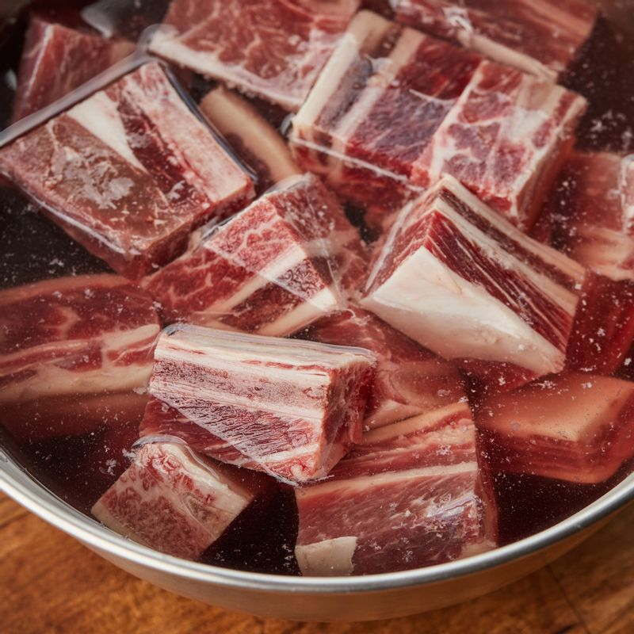
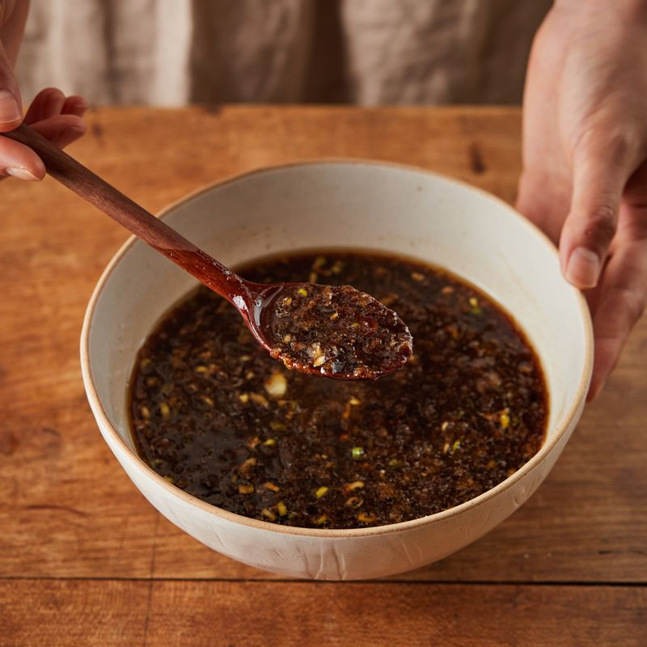
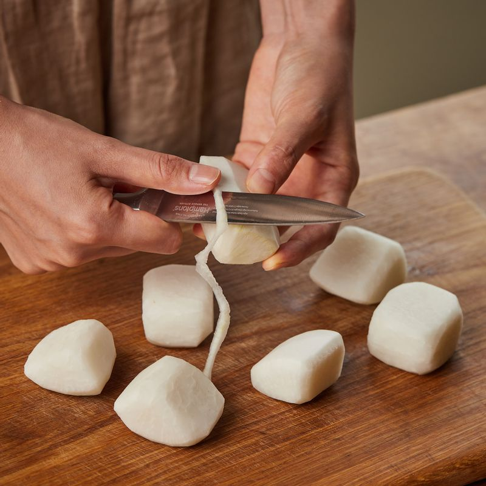
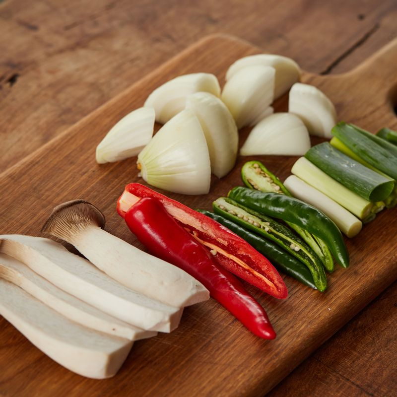
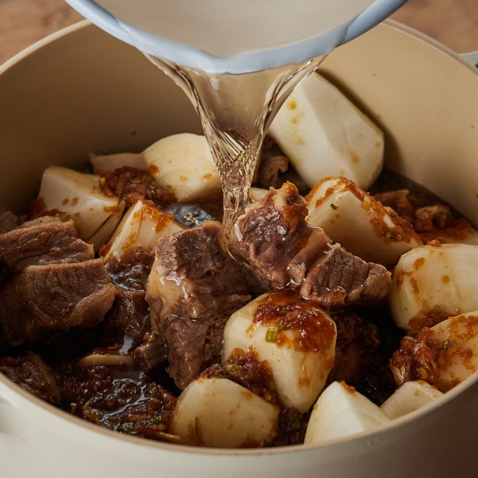

-

갈비는 1시간 정도 찬물에 담가 핏물을 빼주세요. 끓는 물에 6분 정도 데친 후 찬물에 헹궈 불순물과 지방을 제거해 주세요.
-

볼에 양념장 재료를 넣어 섞어주세요.
-

무는 한입 크기로 자른 후 모서리를 둥글게 다듬어 주세요
-

두양파와 대파는 먹기 좋은 크기로 잘라주세요. 홍고추와 청양고추는 꼭지를 뗀 후 길게 썰고 새송이버섯은 밑동을 자른 후 모양을 살려 슬라이스해주세요..
-

냄비에 갈비와 양념장, 물 800ml, 양파, 무를 넣어 40분 정도 삶아주세요.
-
나머지 야채를 넣고 20분 정도 끓인 후 참기름을 뿌려 마무리해주세요.